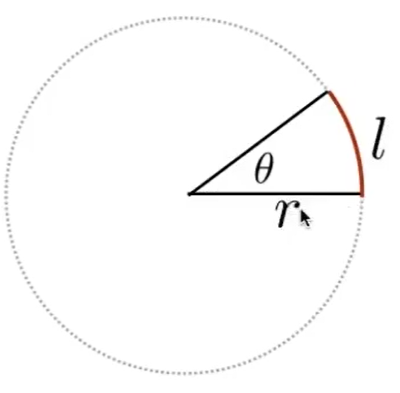
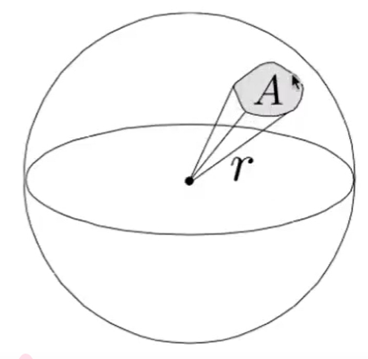
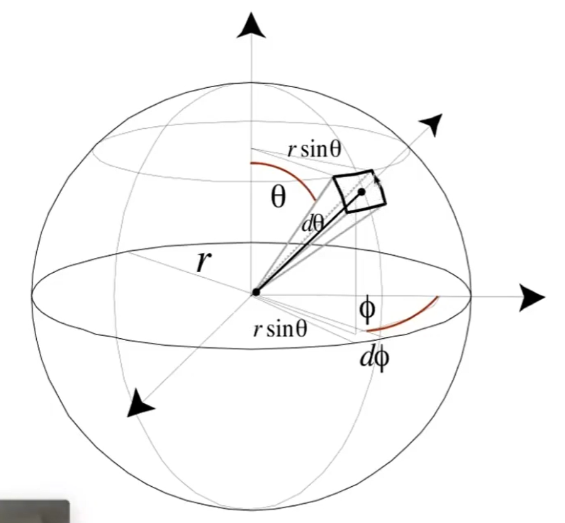
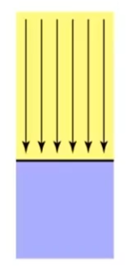
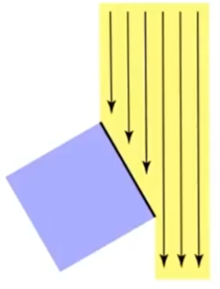
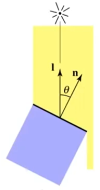
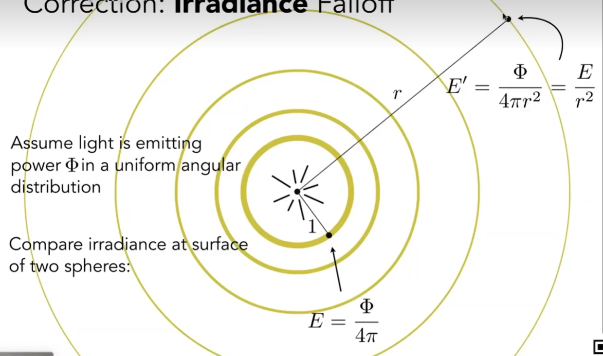
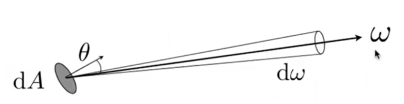
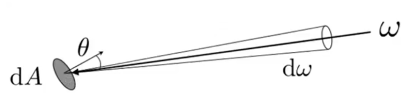
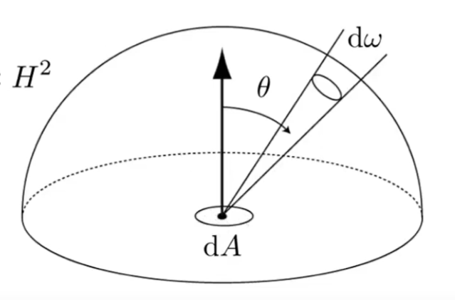

Basic Radiometry 辐射度量学，是对光的物理性质精准建模的方法。因此能够得到更真实的效果。
- 定义了一系列方法和单位
- 给光定义了各种空间中的属性
- 基于几何光学，认为光沿直接传播，无波动性
定义
这是一种基于物理的方法。首先对光的单位和属性做一些定义
| 定义 | 说明 | 符号 | 单位 | 关系 |
|---|---|---|---|---|
| Radiant Energy | 能量，光源辐射出来的是Energy | Q | J | |
| Radiant Flux | power，即单位时间的能量 | \(\Phi\) | Watt或lumen | \(\Phi = \frac{dQ}{dt}\) |
| Radiant Intensity | power per unit solid angle，即单位时间单位面积上的能量 | I | \([\frac{W}{Sr}]\) | \(I(\omega) = \frac{d(\Phi)}{d\omega}\)，其中分子代码power，分母代表per unit solid angle |
| Irradiance | power per unit area | E | \([\frac{W}{m^2}]\) | \(E(x) = \frac{d(\Phi(x))}{dA}\)，其中A代表光线垂直接触的面积 |
| Radiance | power per unit solid angle per unit area | L | \([\frac{W}{Srm^2}]\) | \(L(p, \omega) = \frac{d^2(\Phi(p, \omega))}{d\omega dA\cos\theta}\) |
Radiant Intensity
power per unit solid angle(立体角)，光源向外辐射能量时与方向有关的辐射概念。
$$ I(\omega) = \frac{d(\Phi)}{d\omega} $$
立体角
通常使用弧度制来描述一个角。立体角是2D角度在3D空间中的延伸。用来描述空间中的一个角有多大。
2D角

$$ \theta = \frac{l}{r}, \in [0, 2\pi] $$
3D立体角

$$ \Omega = \frac{A}{r^2}, \in [0, 4\pi] $$
单位立体角
即球面上的单位面积与除以半径平方。

✅ 单位立体角是某个固定大小的立体角。
- 通过\(\theta\)和\(\phi\)定义球面上的一个方向。
✅ 假设朝右的是x轴，朝上的是y轴，朝前的是z轴。从图上看，应该是先以y为轴把坐标系（不是把y轴）顺时针转\(\phi\)，然后以z为轴把坐标系顺时针转\(\theta\)得到一个新的坐标系。所定义的朝向是新坐标系中的y轴正方向在原坐标系中的朝向。
- 计算这个方向上的单位面积
❓ 怎么就从这个方向得到了这个矩形？
假设这个区域是个矩形，横边的长度是\(r \sin \theta d\phi\)，竖边的长度是\(r d\theta\)
✅ 这里反向利用了2D角度公式\(\theta = \frac{l}{r}\)
竖边是以r为半径的2D圆，大小为\(d\theta\)的2D角对应的弧长。
横边是以\(r \sin \theta\)为半径的2D圆，大小为\(d\phi\)的2D角对应的弧长。
$$ dA = (r d\theta) (r \sin \theta d\phi) = r^2 \sin \theta d \theta d \phi $$
- 计算单位立体角
根据定义可知：
$$ d\omega = \frac{dA}{r^2} = \sin \theta d \theta d \phi $$
❗ 后面内容将会用\(\omega\)来表示空间的一个方向。且\(\omega\)可通过\(\theta\)和\(\phi\)来定义。
再看Intensity
Intensity = Flux per unit solid angle，代表了光源在某个方向上的量度。
$$ I(\omega) = \frac{d(\Phi)}{d\omega} $$
反过来说，Flux是Intensity在各个方向上的积分，因此
$$ \Phi = \int_{S^2} I d\omega = 4\pi I \\ I = \frac{\Phi}{4\pi} $$
Irradiance
power per unit area，表示物体在单位面积上接收到的能量。
$$ E(x) = \frac{d(\Phi(x))}{dA} $$
❗ 面积是指与入射光线垂直的区域的面积。如果物体表面与入射光线不垂直，则需要乘以\(\cos \theta\)
| 入射角 | Irradiance |
|---|---|
|  | \(E(x) = \frac{\Phi}{A}\) |
|  | \(E(x) = \frac{1}{2}\frac{\Phi}{A}\) |
|  | \(E(x) = \frac{\Phi}{A}\cos\theta\) |
Intensity VS Irradiance

Intensity为光源向某个立体角辐射的能量，与距离无关。因此Intensity不会随着距离变远而衰减，始终是\(\frac{\Phi}{4\pi}\)
Irradiance为单位面积上接收到的能量。距离越远，总面积越大，单位面积上的能量就会越小。因此Irradiance会随着距离变远而衰减，为\(\frac{E}{r^2}\)。
Radiance
Radiance
= power per unit solid angle per projected unit area
= Irradiance per solid angle
= Intensity per projected unit area
用于描述光线在传播过程中的属性。
$$ L(p, \omega) = \frac{d^2(\Phi(p, \omega))}{d\omega dA\cos\theta} $$

考虑一个朝向为\(\theta\)的区域dA，朝方向\(\omega\)上辐射的能量。
Radiance Vs Irradiance
Radiance = Irradiance per solid angle
$$ L(p, \omega) = \frac{dE(p)}{d\omega\cos\theta} $$
- 理解1：
dA区域的能量会向各个方向辐射，辐射的总能量为Irradiance，Radiance描述其中向\(\omega\)辐射的能量有多少
- 理解2：

dA区域会接收来自各个方向的能量，接收到的总能量为Irradiance，其中来自\(\omega\)方向的能量为Radiance。
- 反过来理解
Irradiance是区域dA从不同角度收到的Irradiance的积分。

$$ E(p) = \int_{H^2}L_i(p, \omega)\cos\theta d\omega $$
✅ \(H^2\)代表上半球，不考虑来自背面的光
Radiance Vs Intensity
Radiance = Intensity per projected unit area
$$ L(p, \omega) = \frac{dI(p, \omega)}{dA\cos\theta} $$
与上面类似，也可以有三种理解方式
本文出自CaterpillarStudyGroup，转载请注明出处。
https://caterpillarstudygroup.github.io/GAMES101_mdbook/